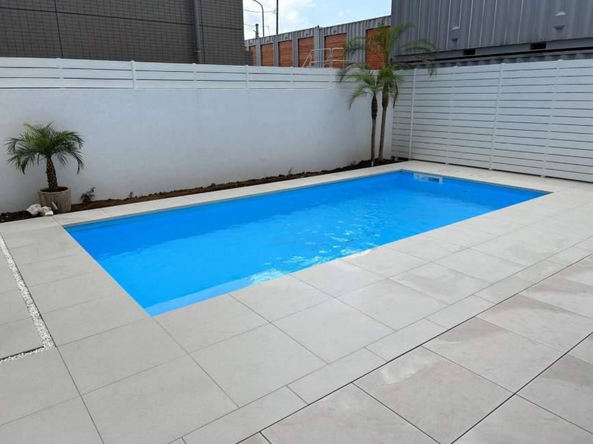
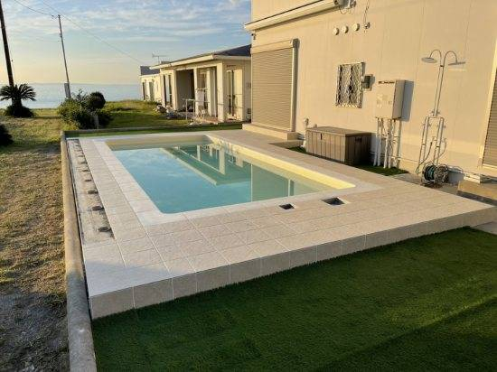
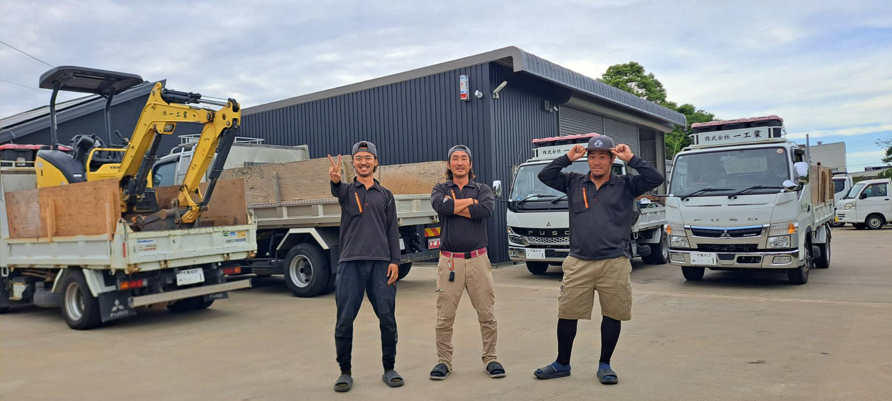

Our Service
設計から施工・点検・メンテナンス・アフターフォローまで一貫して対応します。
Service
One Stop
窓口がひとつなので、工事のあとのご相談も同じ会社にお任せいただけます。
ご要望を伺い、使い方に合わせて設計
自社で施工を担当
引き渡し後の点検
日々の管理・不具合への対応
長くお使いいただくためのご相談
Maintenance
つくったあとも、安心してお使いいただけるよう点検とメンテナンスを承ります。

Area
千葉県東金市を拠点に、千葉県全域・東京都・茨城県に対応しています。
本社：千葉県東金市東中703-1資材置き場：千葉県東金市下武射田2235-1


個人のお客様・法人のお客様、それぞれの窓口からご相談ください。